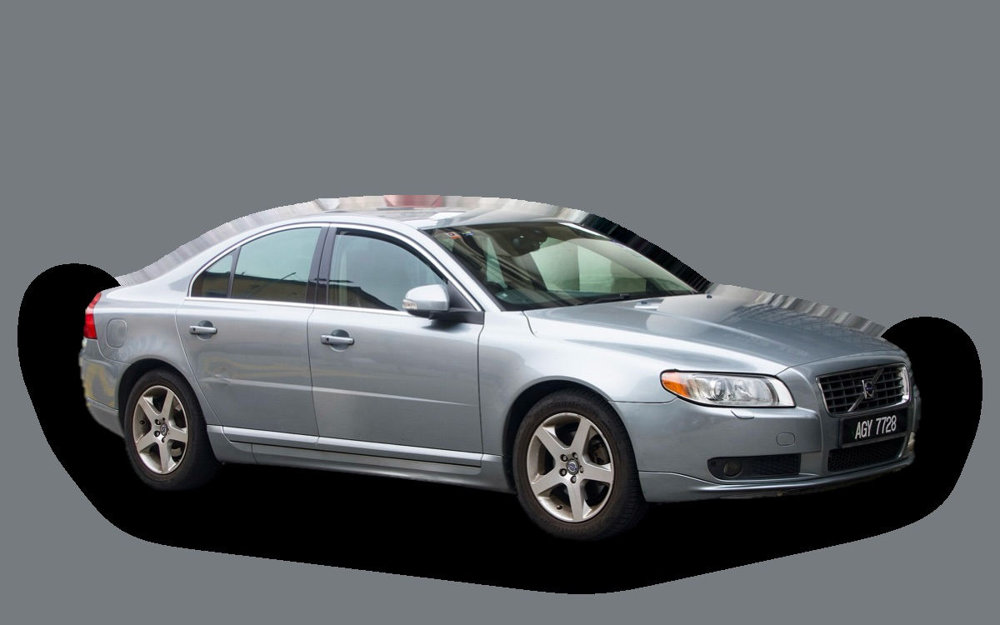
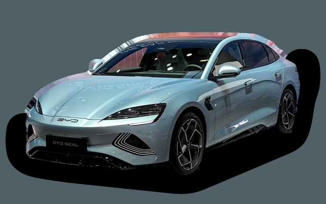
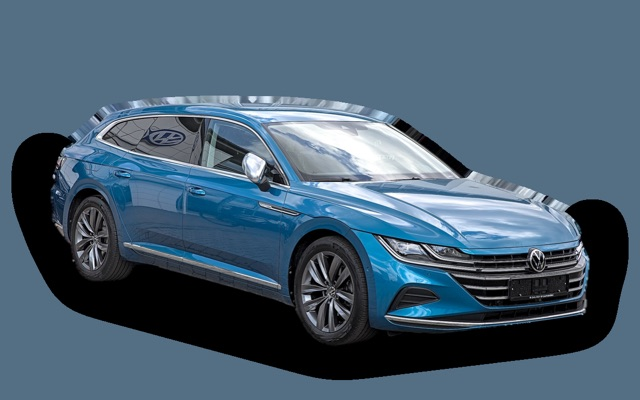

What does a Volvo S80 cost per month?
A 2013 Volvo S80 costs about SEK 3,847 a month, all in.
SEK 3,847per month, 2013 model
SEK 99,800price, 2013 model
SEK 353,000last new price
Dvalue grade (2013)


Monthly cost by model year
| Model year | Version in the calculation | Price | Per month | Grade |
|---|---|---|---|---|
| 2016 | D4 181, Momentum | SEK 137,000 | SEK 4,096 | C |
| 2013 | D4 181, Momentum | SEK 99,800 | SEK 3,847 | D |
| 2010 | D4 181, Momentum | SEK 69,300 | SEK 3,600 | C |
Based on 5 years of ownership and 12,500 km a year, with fuel prices from 2026-10-22. The monthly cost includes depreciation, fuel, servicing and repairs, insurance and road tax.
How the cost splits for a 2013 car
- Depreciation: SEK 763/mo
- Fuel: SEK 1,514/mo
- Servicing and repairs: SEK 1,189/mo
- Insurance: SEK 219/mo
- Road tax: SEK 162/mo
Used prices in ads
| Model year | Median price | Ads | Typical mileage |
|---|---|---|---|
| 2016 | SEK 132,000 | 4 | 170,000 km |
| 2015 | SEK 104,900 | 5 | 182,000 km |
| 2014 | SEK 132,400 | 14 | 187,000 km |
| 2013 | SEK 130,000 | 7 | 192,000 km |
| 2012 | SEK 69,000 | 5 | 216,000 km |
| 2011 | SEK 69,000 | 6 | 221,000 km |
| 2010 | SEK 70,000 | 15 | 226,000 km |
| 2009 | SEK 69,000 | 7 | 237,000 km |
| 2008 | SEK 51,800 | 14 | 257,000 km |
| 2007 | SEK 49,000 | 25 | 262,000 km |
The median price in Swedish ads by model year in October 2026 (source: Blocket, BilKoll). Ad prices are asking prices, and the final price may be lower.
Engines and versions
| Engine | Fuel | Power | 0–100 km/h | Consumption (WLTP) | Range | Model years | Extra cost |
|---|---|---|---|---|---|---|---|
| D4 181 | Diesel | 181 hp | 8.4 s | 4.8 l/100 km | – | 2007–2016 | – |
| D5 215 | Diesel | 215 hp | 7.6 s | 5.6 l/100 km | – | 2007–2016 | +SEK 33,900 |
| T6 AWD 304 | Petrol | 304 hp | 6.9 s | 10.5 l/100 km | – | 2007–2016 | +SEK 90,100 |
- Trim: Momentum, Summum (+SEK 14,900)
Facts
- Body
- Sedan
- Model years
- 2007–2016
- Last new price
- SEK 353,000
- Boot
- 480 litres
- Euro NCAP
- 5 of 5 stars
- New-car warranty
- 3 years
- Reliability
- 3 of 5
- Comprehensive insurance, estimate
- SEK 6,600/yr
- Servicing, estimate
- SEK 4,700/yr
Common faults to watch for
- Injectors and swirl flaps (five-cylinder diesel), repair about SEK 7,000
- Clogged crankcase ventilation (PCV), repair about SEK 6,000
- Timing belt and water pump ruined by an oil leak, repair about SEK 11,000
- Particulate filter and EGR (diesel), repair about SEK 9,000
- Automatic gearbox (Aisin TF-80SC) fails, repair about SEK 55,000
- Timing chain (six-cylinder), repair about SEK 23,000
- Angle gear and Haldex coupling, repair about SEK 15,000
- Turbocharger failure, repair about SEK 15,000
The faults apply to some engines and model years. The calculator works out the risk for the exact version you choose.
Pros and cons
Pro
Comfortable, quiet sedan for long trips that's cheap used.
Con
Lost a lot of value when new, and servicing is expensive.
Similar cars
 Saab 9-5 SedanSEK 3,832/mo as a 2006 model
Saab 9-5 SedanSEK 3,832/mo as a 2006 model
BYD SealSEK 3,922/mo as a 2023 model BMW i4SEK 3,755/mo as a 2023 model
BMW i4SEK 3,755/mo as a 2023 model
Volkswagen ArteonSEK 3,712/mo as a 2021 model Volvo S60 IISEK 3,666/mo as a 2015 model
Volvo S60 IISEK 3,666/mo as a 2015 model Saab 9-3 Sport SedanSEK 3,606/mo as a 2008 model
Saab 9-3 Sport SedanSEK 3,606/mo as a 2008 model
Updated 2026-10-28 · ad data Oct 2026